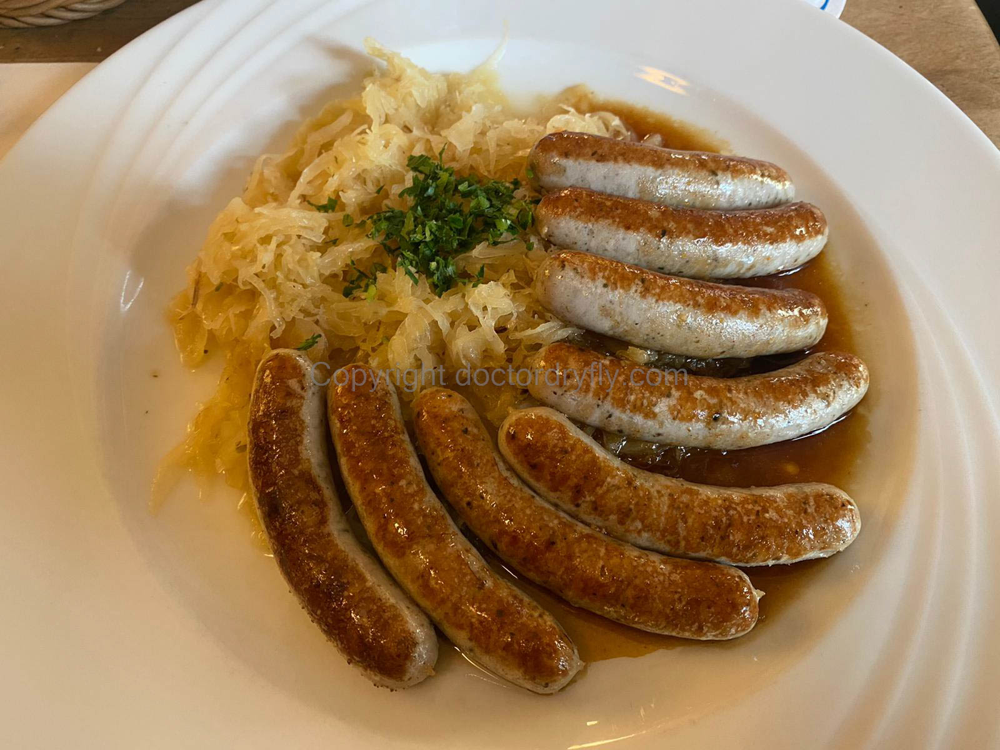

Oktoberfest, Munich Germany
I went to Munich for Oktoberfest in 2022, the first year the event had been held since the pandemic. A number of my friends had previously been and encouraged me to go, with one of them saying something like, “it’s the most fun I’ve ever had.” My overall verdict is not quite as enthusiastic. I thought it was mostly fun, though it wasn’t the life-changing experience I was hoping it would be. A number of circumstances conspired against me, however, and my weak recommendation is that it’s worth doing. That recommendation assumes a positive disposition toward large quantities of beer consumption.
The issues I faced were the following. First, I got very sick three days into a five day trip. I don’t think it was COVID as I took a few rapid tests which were all negative, but one of my friends tested positive when he arrived back in the states. I will say that if you are at all concerned about getting COVID, Oktoberfest is not the place for you. The tents are fully enclosed with tens of thousands of people drinking, singing, and yelling, and the bathrooms are crowded and not well ventilated. I was told after leaving that the “Wiesen-flu” is a common sickness around Germany after Oktoberfest ends. I’m guessing that’s what I got, and though I felt well enough to leave my AirBnB after about a day and a half of sickness, it took me weeks to shake the congestion.
Besides being stuck inside for a few days during my trip, it was rainy and cold the entire time I was in Munich. The outdoor beer gardens at the tents within the Wiesen-ground were closed, as were all the ones within the city. This almost certainly made things more crowded inside the tents and at times, it was difficult to find table space (more on that below). Finally, our AirBnB was not nice, which is a thing that happens sometimes and there isn’t much that can be done about it. Rates for hotels and AirBnBs for Oktoberfest are pricey, and we tried to squeeze five or six people into three bedrooms, without much success.
Travel to and Around Munich
It’s easy enough to fly from the states to Munich, and once one arrives, there is a train that goes straight into the city after about a half hour ride. I suppose an Uber or taxi ride is doable, but there’s almost no reason to hire a car as the train is cheap and straightforward. Make sure to purchase a ticket because the police checked on the train and wrote two women a citation–they weren’t messing around.
Once in Munich, there is a bus and streetcar system that is sort of navigable to non-German speakers. It took us a few attempts to figure out how to buy tickets as there weren’t any machines at most of the streetcar stations, but we discovered they can be purchased from the drivers. This requires having the right Euro denominations which necessitates stopping at a bank, getting small denomination bills, and making change somewhere. The overall level of difficulty for experienced travelers is not high, but it required some effort. It helps if you’ve had a lot of beer.
I mostly used the city bike- and scooter-shares, and walked. Annoyingly, the bike-share requires an app that is easiest to setup before you leave and can be found here. Another word of caution: my friend and I tried to use scooters after leaving Oktoberfest one night when the police approached us and warned us that we weren’t allowed to bike or scooter after drinking. They were exceedingly nice about it, but told us that in the eyes of the law, doing so is the equivalent of driving a car drunk (which is, of course, completely absurd). Another night I rode a bike home and no one stopped me, but apparently that was risky.
Oktoberfest Grounds
Within the Oktoberfest grounds, there are rides, food, tents, and gift shops. The food, both at the stands and in the tents, was shockingly good. The tents are mostly chicken and sausage, priced at roughly what they would be at a county fair in the States. Outside the tents at the stands, there was greater variety and the food was perhaps a bit cheaper than in the tents. The rides are carnival style, and my friends and I weren’t interested because of how cold and rainy the weather was. Before I went to Oktoberfest, a friend reminded me that spinny and whirly rides are not the best idea after drinking a lot. Good advice.
 Typical sausage plate.
The tents and grounds are more crowded at night, obviously, but surprisingly, everyone seemed to be in a good mood. We saw only one fight our entire Oktoberfest trip, not involving Americans, thank god.
The grounds at closing time.
The Tents
There are something like twelve different main tents, and I probably walked through about eight of them. The vibe inside each varied quite a bit–one tent seemed to have more Germans, while another tent seemed to have no one over the age of about 20. They all have different looks and decorations, though all of them have a band and band leaders, and they all seemed to play the same songs. The music was a mix of pop singalong favorites (Abba, YMCA, Take Me Home Country Roads, Sweet Caroline) and German songs (especially the “Ziggy Zaggy, Ziggy Zaggy, Oi Oi” song). The Europeans also love spontaneous a cappela versions of “Hey Baby”. If I never have to hear that song again it will be too soon. For some reason, “Teenage Dirtbag” by Wheatus, which I hadn’t heard in 15 years, is popular with the bands and the patrons. Brush up on the words before you fly to Germany. The music, especially the pop music, gets kind of old after awhile as it’s pitched at the Boomer/Gen-X karoake demographic. I’m sure others disagree, but the beer mostly tastes the same though across tents. Consuming beer by the liter is not designed for discerning palates.
Beer service.
How wild were things inside the tents? It kind of depended on the tent, but moderately wild, especially at night. After about 7 p.m. everyone has had a lot to drink so most people are drinking and talking. In general, everyone is pretty well behaved and security is present but there is not as much oversight as at an American club. I saw one person throwing up (everywhere) and security eventually saw him and gently escorted him out. It was very nice! I also saw a handful of people doing hard drugs without exactly being surreptitious about it. I didn’t see any fights except the one I previously mentioned outside a tent which occurred at about two in the afternoon. In some of the tents, especially at night, people stand on the benches rather than sit, but occasionally a bench goes over and people go everywhere. It’s important to maintain your balance, and if you cause the bench to tip over you might get a talking-to by other partyers.
 A tent I visited (who knows which one). Band at left.
A tent I visited (who knows which one). Band at left.
Making Reservations
Yes, it would be helpful, but reservations are not strictly necessary and it isn’t that easy for non-German speakers to make reservations. The ability to make reservations seems to depend on the tent, the day, and the time. Our experience was that reservations were not needed in any tent during the day as there was plenty of space open, especially during weekdays. At night, things were more crowded, and reservations were required in some of the tents we visited. In others, the servers were willing to squeeze you in if there was room at a table, though in most of the tents you could also squeeze into the walkways between tables. This is a bit claustrophobic and uncomfortable, and you have to walk to the end of the aisles to order more beer.
The first tent we visited was on a Thursday afternoon and wasn’t very crowded. We were able to sit down and order food and beer without a problem. At about 4 p.m., the server kicked us out so they could begin preparing for the evening shift, for which all tables were reserved. Unfortunately, I can’t remember the names of any of the tents as they are long German words, the beer in different tents was virtually indistinguishable and, well, I was drinking.
Hacker-Pschorr Tent, though I have no memory of visiting. Everyone is standing on benches rather than sitting.
After we left the first tent, we walked into another tent, couldn’t find any space, walked into a third tent, and decided we needed to be more aggressive about making space for ourselves. My group split up, and myself and two of my friends were able to make space in a walkway rather than at a table. This made it a little tricky to get beer, though with a little persistence we were able to do so. I think the key thing for Americans to remember is that personal space and beer service are not as regimented as in the U.S. If you see a plausible place to stand, occupy that space until someone makes you move. If you see a server walking by with beer, wave them down. It’s far more of a free-for-all as compared to American restaurants or bars.
The next night, Friday, was much more crowded, but we were able to get a table in a tent in the early afternoon. This particular tent did not make us leave and we held that table until closing (which is early, about 10 p.m.) The server did try to squeeze other people in, and if your party isn’t large enough, other people are going to be sat at your table. This isn’t bad as it gives you a chance to talk to others and meet people from different parts of the world.
The reality is, even if you want to make a reservation. it’s likely going to be difficult. Figuring out the websites prior to leaving the States seemed impossible. Those sites that I could figure out required significant deposits for both beer and food (something like $150 a person, with a minimum on the number of people) that I wasn’t willing to shell out before getting to Germany. The reservation sites also require you to specify a time. I was skeptical I would be able to wrangle my eight friends to get to a tent at a particular time in the early evening, which also made me hesitant to schedule a reservation.
In sum, though I think reservations would have helped, especially on a Friday or Saturday night, it wasn’t easy to make them and we were able to survive without them. It’s important to get to a tent before things get crowded in the early evening. If the waiters clear the table at 4 p.m., I recommend moving quickly to another tent to get a table for the evening. If you’ve got a table at around 5, don’t leave it unless you’re ready to go home. This website, which I found on Reddit, sends out emails for reservations via email though as I’ve said, we never used it. Bring Euros in cash, as the tents are strictly a cash operation. Munich in general seemed more cash-based than most other European countries I’ve visited.
Would I Go Back?
I think the answer is yes, especially if I had friends who were enthusiastic. In retrospect, I had a lot of bad luck that diminished my fun. Getting sick halfway through the trip meant I didn’t actually get all that much time at Oktoberfest. The weather and lodging situation definitely didn’t help things either.
If going during the official Oktoberfest isn’t an option, one could have a similar type of experience just by going to the beer halls in downtown Munich. Many of the breweries have their own halls near Marienplatz and it’s easy to walk between them. In fact, we did that our first night in Germany and it may have been my favorite overall experience. The beer is the same as in the tents, the food is probably better, and there are Bavarian bands and lots of other people hanging out. (The beer halls in Munich are, shall we say, famous). It also helped that I wasn’t sick at that point in the trip.
 Marienplatz on a rainy night.
Marienplatz on a rainy night.
One final thing: wear lederhosen or a dirndl at Oktoberfest. I know it sounds silly, and I was initially opposed, but almost everyone wears it, and it makes the experience more fun and festive. I read articles online that said not to buy cheap or knock-off clothes because the Germans will be annoyed, but I really doubt anyone would notice. I bought lederhosen from this site which I really liked, but my friends rented from this place, which was also a good option. Whether you buy or rent depends on your willingness to use lederhosen for future Oktoberfests in the States, or as a Halloween costume. I am now obligated to attend American Oktoberfests in my lederhosen for the rest of my life.